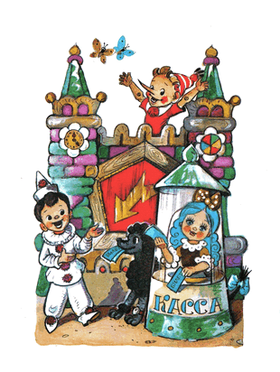
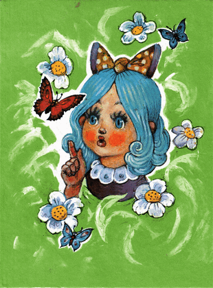
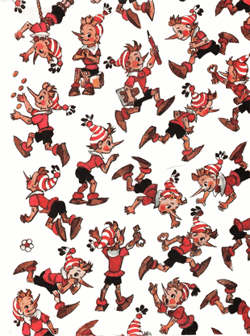

Karabas Barabas termenung di depan perapian dengan suasana hati yang menjijikan. Kayu-kayu bakar basah sulit menyala. Di luar sedang hujan. Atap tenda teater bonekanya bocor menetes-netes. Tangan dan kaki para boneka basah kuyup, tak ada satupun yang mau berlatih, sekalipun di ancam dengan cambuk tujuh cabang. Boneka-boneka itu sudah tiga hari tidak makan apa pun, mereka kasak-kusuk berbisik di dalam sanggar, tergantung di paku masing-masing.
Sejak pagi tidak satu pun tiket teater yang terjual. Lagi pula, siapa yang mau pergi menonton drama Karabas Barabas yang membosankan, aktornya lapar dan berantakan!

Jam di atas menara kota berdentang enam kali. Karabas Barabas dengan lesu melangkah ke area penonton; kosong.
- Persetan dengan semua pemirsa yang terhormat /dia menggerutu lalu pergi ke keluar. Sampai di luar, dia menatap, berkedip-kedip, lalu terperangah mulutnya terbuka sangat lebar, bahkan burung gagak pun dapat terbang masuk dengan mudah/
Di seberang teaternya, di depan tenda linen baru yang berukuran besar, sekerumunan orang berbaris mengantri, tanpa memperdulikan kencangnya angin laut.
Di atas pintu masuk ke dalam tenda, pada sebuah balkon, berdiri seorang manusia kecil berhidung panjang mengenakan kupluk, meniup-niup terompet serak dan menyerukan sesuatu.
Para pemirsa tertawa, bertepuk tangan, lalu berduyun-duyun masuk ke dalam tenda.
Duremar menghampiri Karabas Barabas; dia tidak bau lumpur seperti biasanya.
- Ehehe... /dia berkata, sambil mengkerutkan wajahnya seperti morel asin/ Bisnis lintah tidak ada kemajuan. Sekarang aku mau bergabung dengan mereka. /Duremar menunjuk ke tenda linen baru/ aku akan meminta pekerjaan pada mereka sebagai tukang menyalakan lilin atau mengepel lantai.
- Punya siapa teater sialan itu? Orang mana? /geram Karabas Barabas/
- Boneka-boneka itu sendiri yang membuka teater "Petir" itu, mereka sendiri yang menulis naskah dan puisi, mereka sendiri yang memainkan peran.
- Karabas Barabas menggertakkan gigi, menjambak jenggotnya sendiri, lalu menghampiri tenda linen baru itu.
Di balkon di atas pintu masuk, Buratino berseru-seru
- Pentas hiburan perdana, komedi menarik, tentang kehidupan seorang manusia kayu! Kisah nyata tentang bagaimana kami mengalahkan semua musuh kami dengan mengandalkan kecerdasan, keberanian, dan akal pikiran...
Di depan pintu masuk teater boneka itu, di dalam bilik kaca, duduk Malavina mengenakan bando cantik di rambutnya yang biru, kewalahan membagikan tiket kepada mereka yang tidak sabar ingin menonton komedi lucu tentang kehidupan para boneka.
papa Carlo, dengan jaket beludru barunya, memutar organ dan dengan gembira mengedipkan mata kepada para pemirsa yang terhormat.
Artemon menyeret ekor si rubah Alisa keluar dari tenda, karena menyelinap masuk tanpa tiket.
Si kucing Basilio, yang juga tidak punya tiket, langsung kabur dan duduk kehujanan di atas pohon, melotot kebawah dengan tatapan bengis.
Buratino, pipinya melendung, meniup terompet serak.
- Pentas dimulai!
Lalu dia meluncur turun tangga, untuk memainkan komedi adegan pertama; mengisahkan bagaimana si fakir miskin papa Carlo meraut-raut kayu gelondongan, membuat manusia kayu, tanpa menyangka bahwa hal itu akan mendatangkan kebahagiaan padanya.
Datang penyu Tortilla merangkak paling terakhir masuk ke dalam teater, di mulutnya ia membawa tiket kehormatan yang terbuat dari kertas papirus berpolet emas.

Pementasan telah di mulai. Karabas Barabas dengan murung kembali ke teaternya yang kosong. Dia ambil cambuk tujuh cabang. Membuka kunci pintu sanggar.
- Akan kuberi kalian, berengsek-berengsek pemalas kurang ajar! /dia menggeram jahat/ Akan kuajari kalian untuk menggoda para pemirsa supaya datang padaku!
Dia mencambuk-cambuk. Tapi tidak ada yang menjawab. Sanggar itu sudah kosong. Hanya ada tali-tali bergerai pada setiap paku.
Semua boneka; Harlequin, gadis-gadis bertopeng hitam, penyihir-penyihir bertopi kerucut yang ada bintangnya, si bungkuk yang batang hidungnya seperti mentimun, boneka-boneka Alibaba, boneka-boneka anjing; semua-muanya, semua boneka minggat meninggalkan Karabas Barabas.
Dengan lolongan mengerikan, dia melompat keluar dari teater. Dia memergoki salah satu aktor yang kabur paling belakang, tertinggal di genangan air di dekat teater baru, di mana musik riang sedang dimainkan, diiringi tawa dan tepuk-tepuk tangan.
Karabas Barabas nyaris meraih boneka anjing bermata kancing itu. Tapi, entah datang dari mana, Artemon menerjang menyambar, merebut anjing itu dan langsung melesat membawanya ke dalam tenda, ke suatu tempat di belakang panggung, di mana sop kambing dengan bawang bombay sedang di masak untuk para aktor yang lapar.
Karabas Barabas terduduk lesu di genangan air di bawah rintik hujan.
 